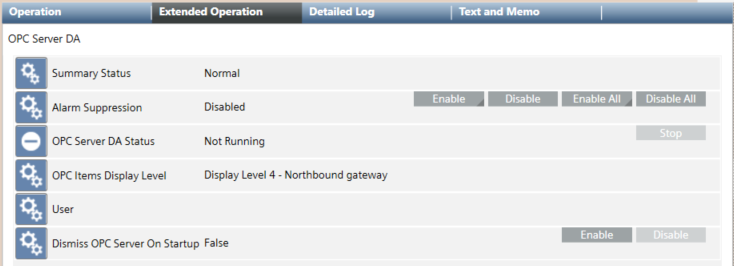

When you select the Desigo CC OPC DA server, the Extended Operation tab displays the available commands.

Property
Status
Commands
OPC Server DA Status
Desigo CC OPC DA server running conditions:
Not Running: TheDesigo CC OPC DA server is stopped. The last third-party OPC client disconnects and the shutdown procedure completes successfully.
Loading Configuration: The Desigo CC OPC DA server starts loading the configuration after its initialization.
Running: TheDesigo CC OPC DA server is running. The Desigo CC OPC DA server can run only:
if at least one third-party OPC client is connected to the Desigo CC OPC DA server, and its initialization has been completed.
Desigo CC OPC DA server is running and the configuration has been successfully loaded.
No License: TheDesigo CC OPC DA server license is not available. This may happen during the initialization (such as, the OPC server is not licensed) or when verifying the OPC server running condition (such as, the license is unavailable). The Desigo CC OPC DA server stops and a Status event is generated.
No Configuration: The OPC DA server node is not present in the project, or the OPC scope is missing in the project, or the OPC scope configuration is invalid (OPC scope not configured or not having items to be exposed). If the configuration is invalid. The Desigo CC OPC DA server stops and a Status event is generated.
Failure: TheDesigo CC OPC DA server executable file is not found or an expected error occurs (for example, while loading the configuration or while verifying Desigo CC OPC DA server running condition). The Desigo CC OPC DA server stops and a Fault event is generated.
Invalid Configuration: The OPC scope configuration is invalid. A Status event is generated.
Empty Configuration: The configuration is valid but there are no OPC items to expose. The Desigo CC OPC DA server stops.
Stop
This command is:
Disabled when the Desigo CC OPC DA server is not running or an operation is in progress.
Enabled only when the Desigo CC OPC DA server is running and lets you stop the Desigo CC OPC DA server, so that when it starts again, the latest configuration is loaded. For more details, see OPC Items Data Alignment. NOTE: As the generic OPC server does not support the cache clean up, it is not possible to automatically clean the current OPC configuration to retrieve the latest data (because of configuration changes).